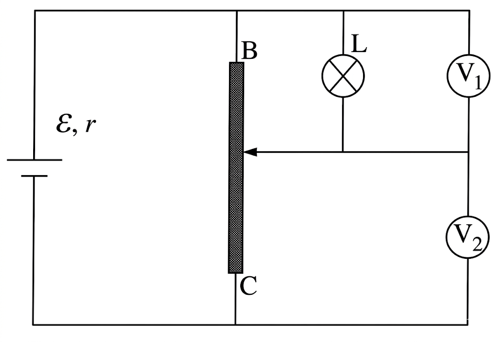
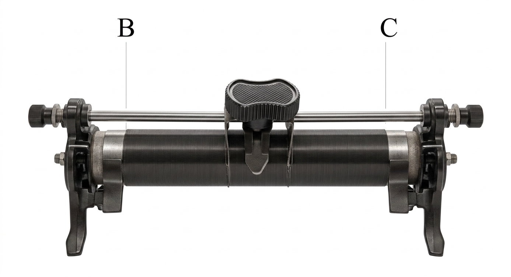
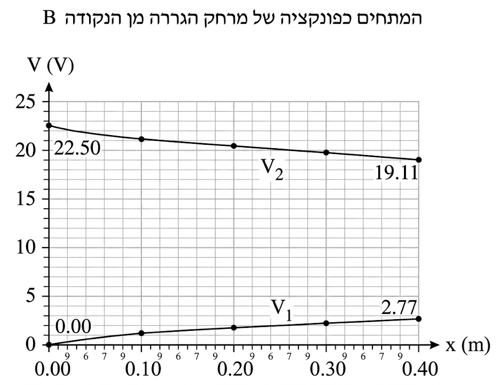
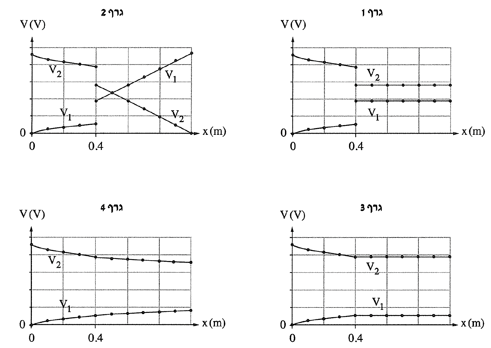

שאלה 3
נתון מעגל חשמלי הכולל מקור מתח לא אידאלי, נגד משתנה, נורה ושני מדי מתח אידאליים כמתואר בתרשים 1. הנגד המשתנה עשוי מתיל מוליך המלופף על גליל עשוי חומר מבודד (ראה תרשים 2) שהמרחק בין קצותיו הוא BC = 1m
(שים לב: זהו המרחק בין הקצוות של הנגד, ולא אורך התיל שהוא עשוי ממנו).
נתוני הנגד המשתנה: האורך הכולל של התיל ℓ = 100m, שטח החתך שלו A = 1mm2
וההתנגדות הסגולית שלו ρ = 9 · 10-7 Ωm.


חשבו את ההתנגדות הכוללת של הנגד המשתנה. שימו לב ליחידות. (6 נקודות)
תלמידים הציבו את הגררה בקצה B של הנגד המשתנה ורשמו את ההוריות של מדי המתח. אחר כך הם הזיזו את הגררה עד לקצה C, ורשמו את ההוריות של מדי המתח עבור נקודות שונות שהגררה הייתה בהן. התלמידים סרטטו גרף של התוצאות שקיבלו.
בתרשים 3 מתוארות חלק מן ההוריות של שני מדי המתח כפונקציה של המרחק x של הגררה מן הקצה B.
חשבו את הזרם שזורם במקור המתח כאשר הגררה נמצאת בנקודה B. (5 נקודות)
תלמיד טען כי הכא"מ של מקור המתח הוא 22.5V כפי ערכו המקסימלי של V2, ואילו שותפתו לניסוי טענה כי הוא טועה.
קבעו ונמקו מי מהם צודק. (7 נקודות)
חשבו את עוצמת הזרם העובר דרך הנורה כאשר x = 0.4m.
חשבו את התנגדות הנורה.
(10 נקודות)

מייד לאחר שהגררה עברה את המיקום של x = 0.4m, נשרפה הנורה.
קבעו איזה גרף מן הגרפים 4-1 שבתרשים 4 מייצג נכון את המתחים שנמדדו לאחר שהנורה נשרפה.
נמקו את קביעתכם. (5⅓ נקודות)
